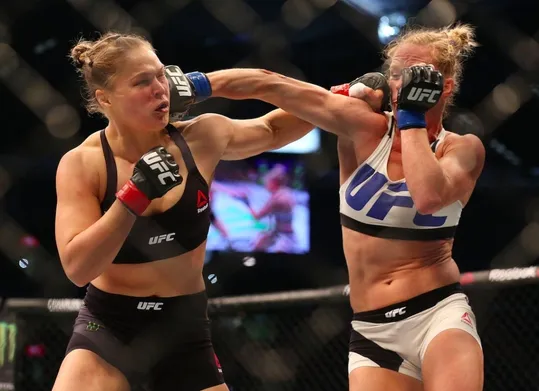

What is MMA?
'종합격투기' 혹은 'MMA' 라고 불리는 이 무술은,
복싱, 무에타이/킥복싱, 주짓수, 레슬링과 같은 단일 격투기들을 문자 그대로 종합시켜 각각의 장점을 흡수하고 단점을 보완하는 형태로 실전 맨손 격투에 가장 최적화 된 무술체계이다. 종합격투기의 역사는 최고의 무술이 무엇인지 가려내는 서로 다른 단일 무술 간의 대결인 이종격투기로부터 출발하여 어떤 무술과 싸워도 효과적으로 대응할 수 있는 방법과 기술들을 추구하면서 최종적으로 탄생한 격투기가 종합격투기이다. 이종격투기가 한 가지 무술만 배운 사람끼리의 대결, 예를 들면 태권도 VS 씨름이나 무에타이 VS 유도 이런 방식일 때 종합격투기는 선수 당사자가 복싱, 무에타이/킥복싱, 주짓수, 레슬링을 모두 아우르는 다양한 격투기 기술들을 수련하여 대결하는 방식이다. 때문에 기술 체계는 단일종목에 비해 종합격투기가 훨씬 폭넓고 다양하다. 그러므로 이종격투기와 종합격투기는 엄연히 구분된다.